ThingSpeak dashboard
Field 1 · Field 2Temperature (°F) and humidity (%) channels uploaded from prototype firmware—used as an end-to-end check before field deployment.
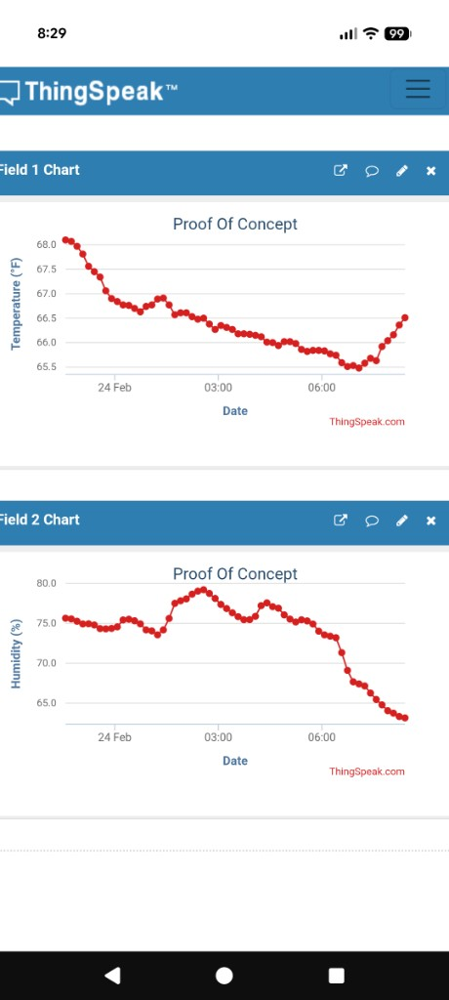
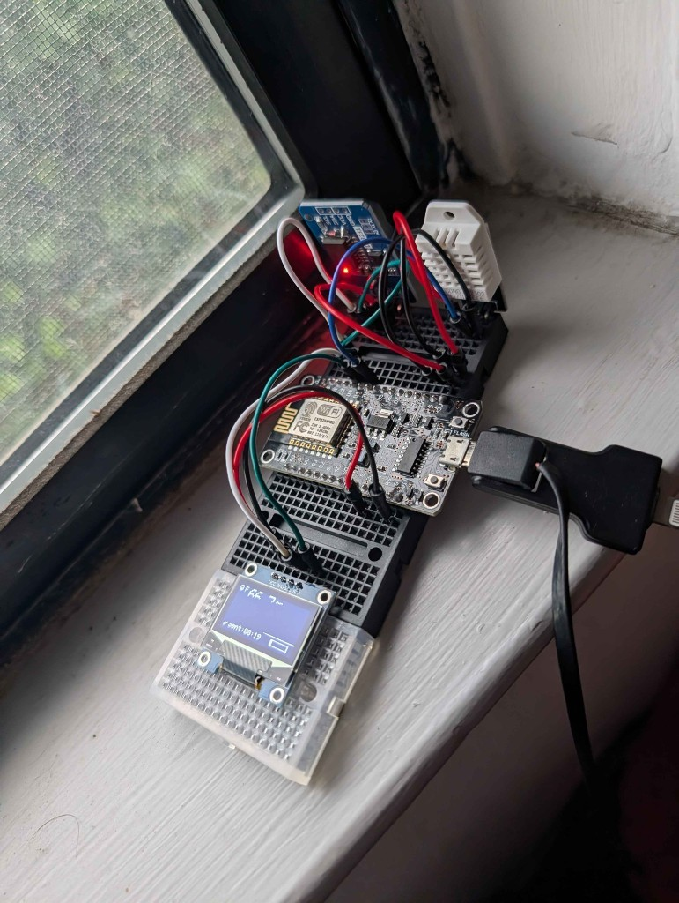
MESA DVC Foundation · Division of Engineering · Spring 2026 Cohort
“A multi-disciplinary initiative dedicated to rigorous monitoring and scientific study of campus pond ecosystems through integrated sensor networks, lab cultures, and field-ready platforms.”
Technical overview — DVC Pond Research engineering team
Active · In progress · Spring 2026 cohort
We study and support the three campus ponds through reproducible measurements, controlled cultures (~30 °C capsule work), and field-ready platforms—documented alongside biology collaborators and published on our IO hub.
Outputs and live data
Key metrics from the current field and bench campaign. Figures update as the team publishes to the IO hub and ThingSpeak.
Temperature and humidity channels from bench firmware. Replace the URL below with your public ThingSpeak chart embed when the channel is public.
Measurements, field notes, and lab documentation on the project IO site.
Open IO documentation ↗Export PDFs from the linked repositories or request formal reports from the faculty advisor.
Last updated
01 · Overview
Stakeholders · ponds · sampling efficiency
The three DVC ponds support turtles, ducks, geese, and other wildlife. Observations note murky water, algae on walls, and occasional stressed fauna; circulation and aeration may be limiting factors. Manual sampling has taken 2–3 hours for a team of five across multiple sites—slow for decision-grade monitoring.
We are building repeatable instrumentation (lab capsule, bench IoT, and surface/underwater platforms) so biology and engineering can share aligned datasets—from bacteria cultures at ~30 °C to field temperature, pH, and turbidity traces.
03 · Instrumentation
Cloud logging · bench hardware
Temperature (°F) and humidity (%) channels uploaded from prototype firmware—used as an end-to-end check before field deployment.

NodeMCU-class board with local display, DHT-style temperature/humidity sensing, and WiFi uplink—foundation for capsule logging and future pond surface nodes.
05 · Plan
Engineering notes · 27 Feb 2026 docs
3D-printable water surveyor boat; Arduino + Raspberry Pi tiers; robotic fish / ROV-style chassis references.
Temperature & pH first; turbidity & dissolved oxygen; general hardness testing; ultrasonic ranging where applicable.
Double-wall concepts; waterproof IP67 enclosures; silicone sealant, gaskets, stainless fasteners; 3D-printed shell.
Evaluate camera + model path to read test strip colors vs. lab control swatches (ties to color-grading repo).
PID thermal loop; syringe micro-dosing sketches; induction heating research (Instructables) for lab tooling only—under advisor review.
Start with temperature sensor path, validate in Tinkercad/Wokwi, then layer navigation, power, and waterproofing.
Weight vs. buoyancy with multiple sensors; speed vs. drag; weather sealing; solar vs. battery budget; smaller hull → faster iteration.
Sensor fusion for effective robot navigation — research alongside Adafruit fundamentals and GPS tutorials for waypoint logging.
06 · People
Roles from incubator planning · April 2026
Web and documentation
Site layout, README, media, Markdown planning docs, combined vs. split Engineering/Bio information architecture.
Hardware & circuits
Heat incubator, Tinkercad schematics, pin/sensor selection, BOM and sourcing.
Hardware & circuits
Incubator assembly, bench validation, integration with temperature controller and heat coil.
Software and documentation
Listed on planning drafts; role TBD per latest roster.
Faculty advisor
Safety, experimental design, stakeholder alignment, and integration with course outcomes.
07 · Systems & Code
Capsule · logging · robotics
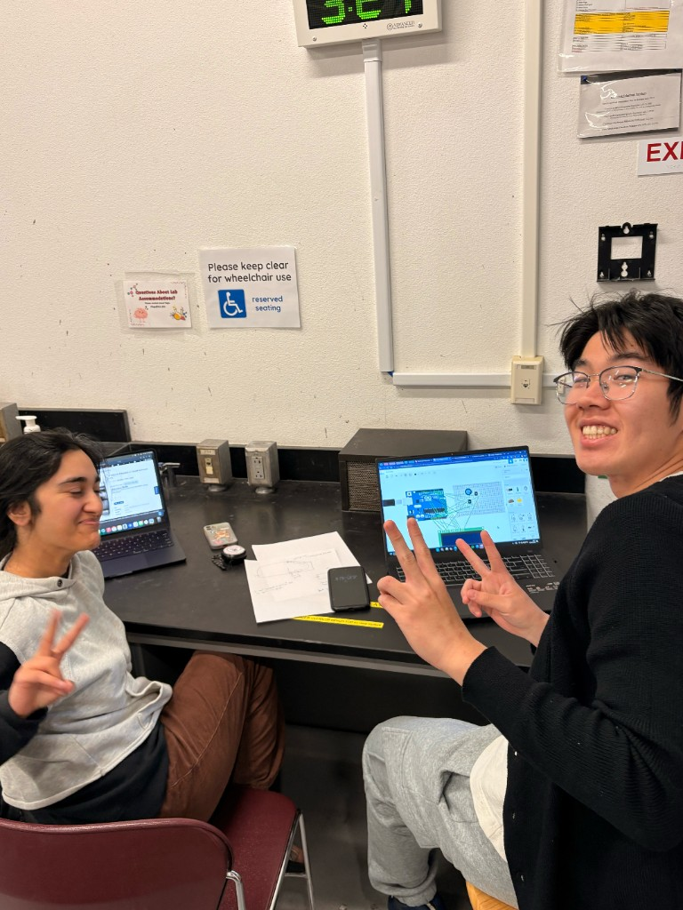
Insulated chamber with viewing ports, power entry, and indicator—paired with resistive heat path (e.g. Kanthal-class wire) and closed-loop control once the temperature controller stage is integrated.
Waterproof bench tanks and IP-rated project boxes under evaluation for wet testing (see resources).
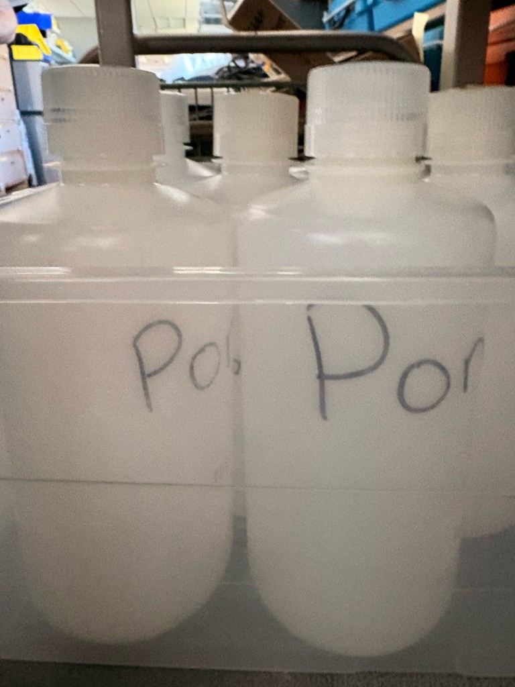
Microcontroller bring-up in simulation then hardware: thermostat lesson analogs in Tinkercad, Wokwi for firmware checks, then capsule wiring with faculty-reviewed power limits.
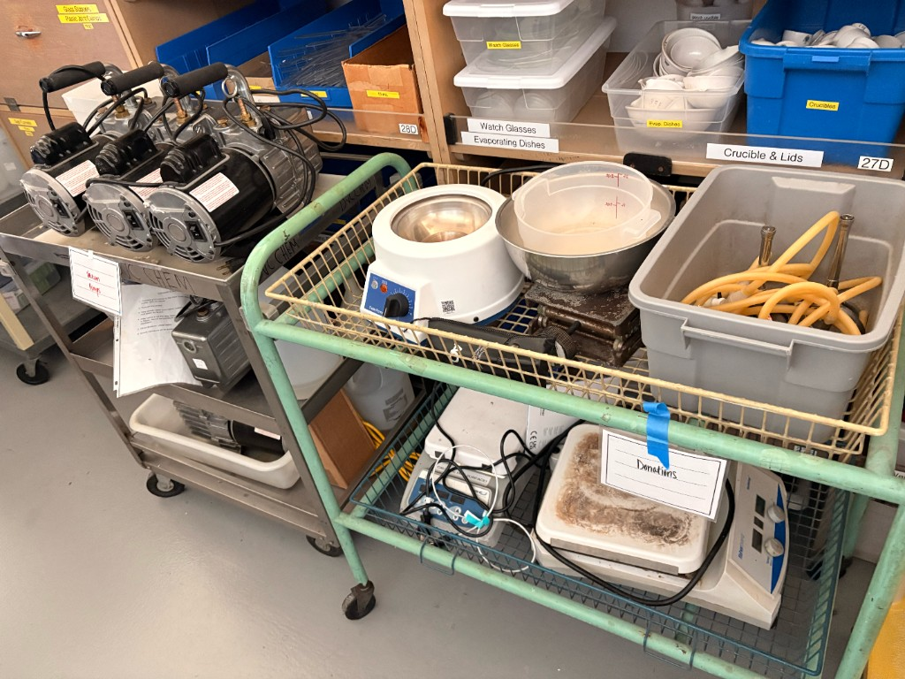
Robotic fish / boat concepts for mobile temperature and water-quality mapping; cart-scale prep for pH, scales, and hot-plate workflows supporting bio cultures.
24/7 temperature & humidity with live display + ThingSpeak (or successor) channels.
Timeline with dependencies; student-government deck; need statements for metrics beyond pH/DO/turbidity.
GitHub color-grading system linked to strip imaging hardware experiments.
Bacteria capture and growth supported by controlled capsule and shared data model with IO site.
Code tools
Version control · color pipeline · simulations
08 · Milestones
Status · spring 2026
Tinkercad incubator path validated for sensor stage; assembly with controller + coil queued.
ThingSpeak fields live from bench hardware; OLED local readout.
Insulated prototype on bench with wiring iterations.
3D-printed shell, seals, thruster/servo trade studies, weight budget.
09 · References
External guides · community builds · papers
Commercial chassis: search “underwater ROV kit” or marketplace listings for sizing only—verify ratings and seals independently.
10 · Citation
No DOI yet — use the canonical documentation hub
DVC Pond Research engineering team. DVC Pond Research Project — student engineering documentation and field notes (Spring 2026). Diablo Valley College; MESA DVC Foundation affiliation.
Retrieved from the IO documentation hub ↗ and this project site. Replace with a formal citation once a Zenodo archive or proceedings DOI is published.
11 · Media
Lab, bench, and planning artifacts
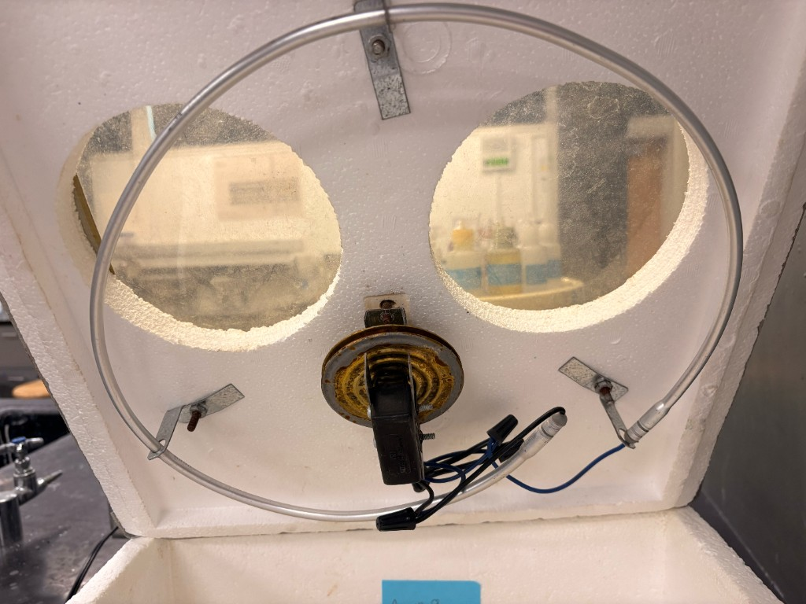
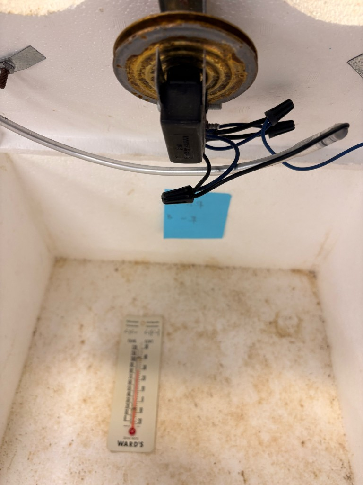
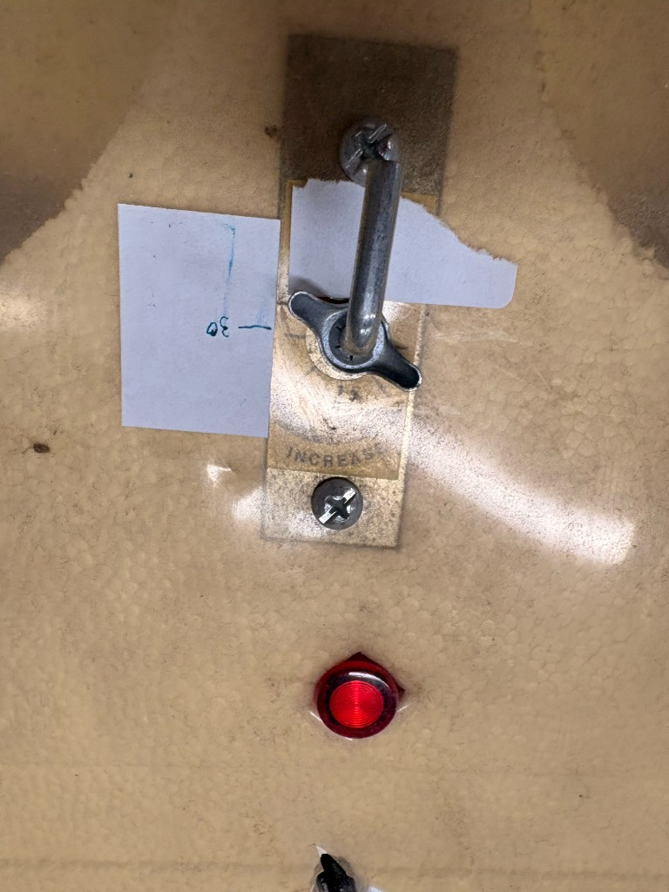
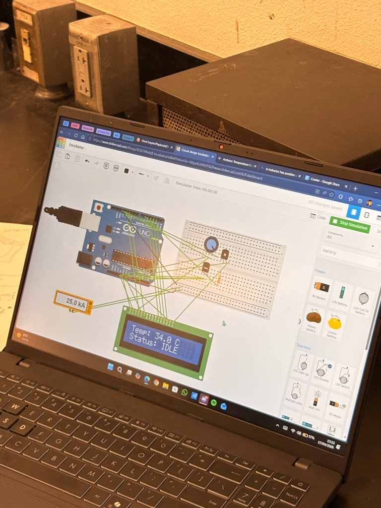
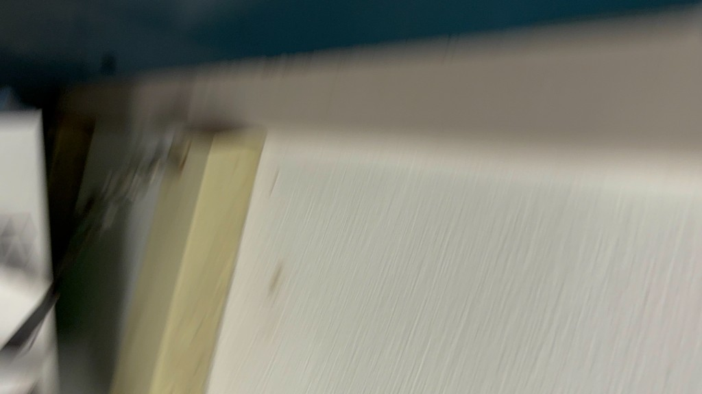
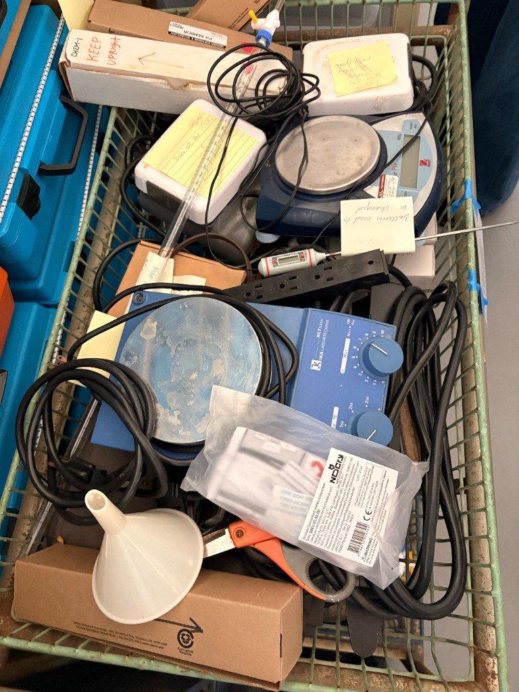
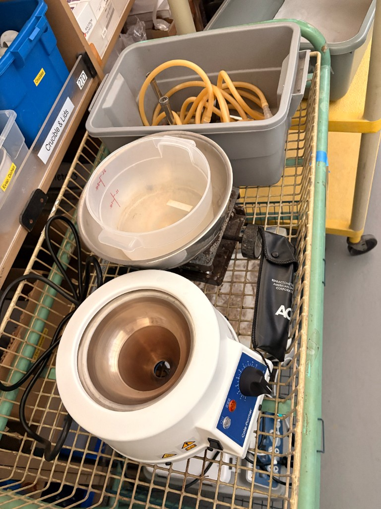
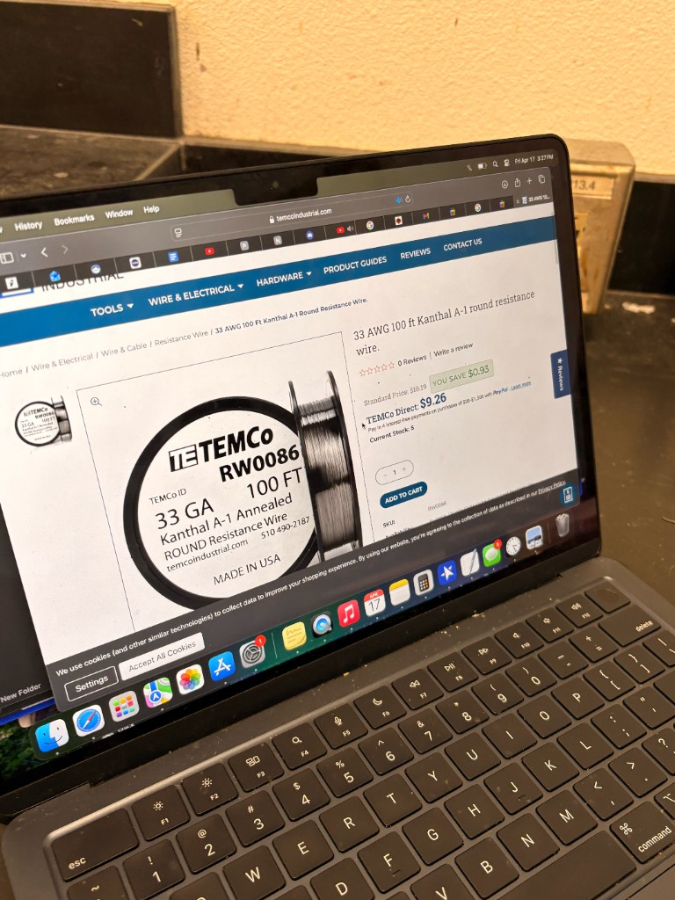

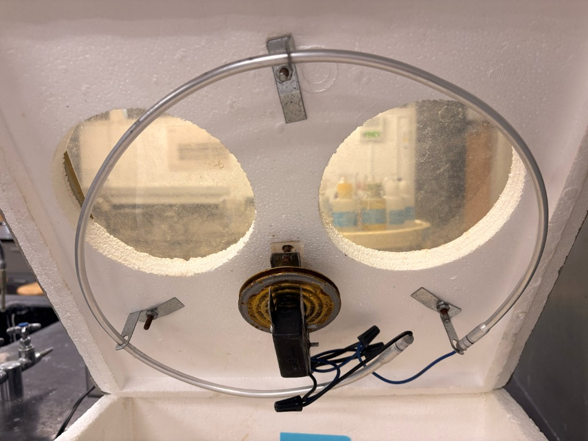
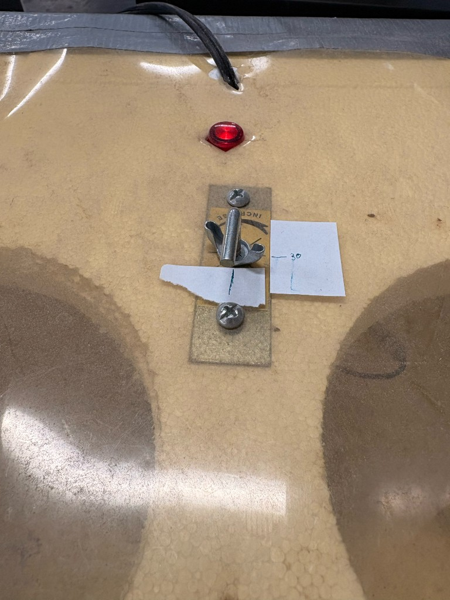
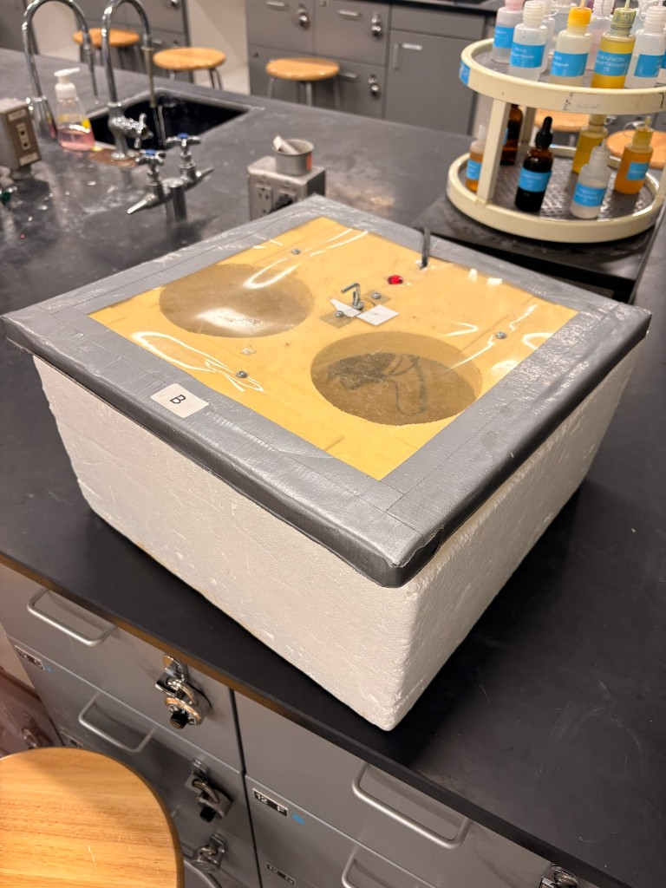